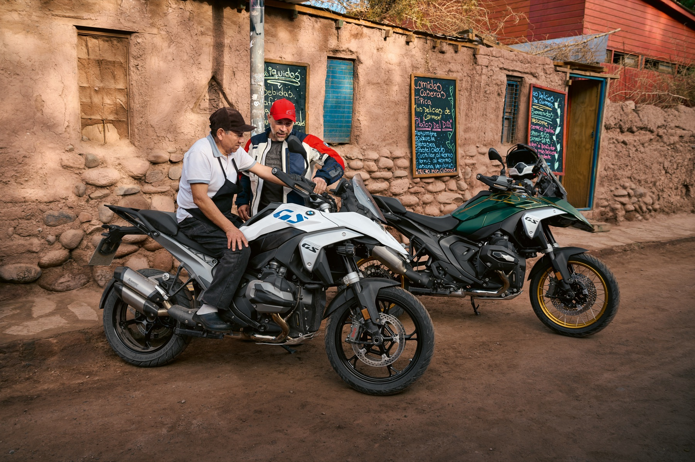
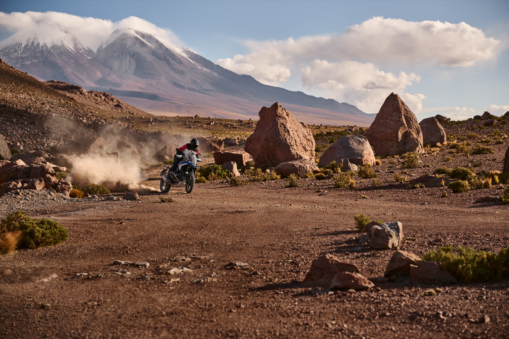
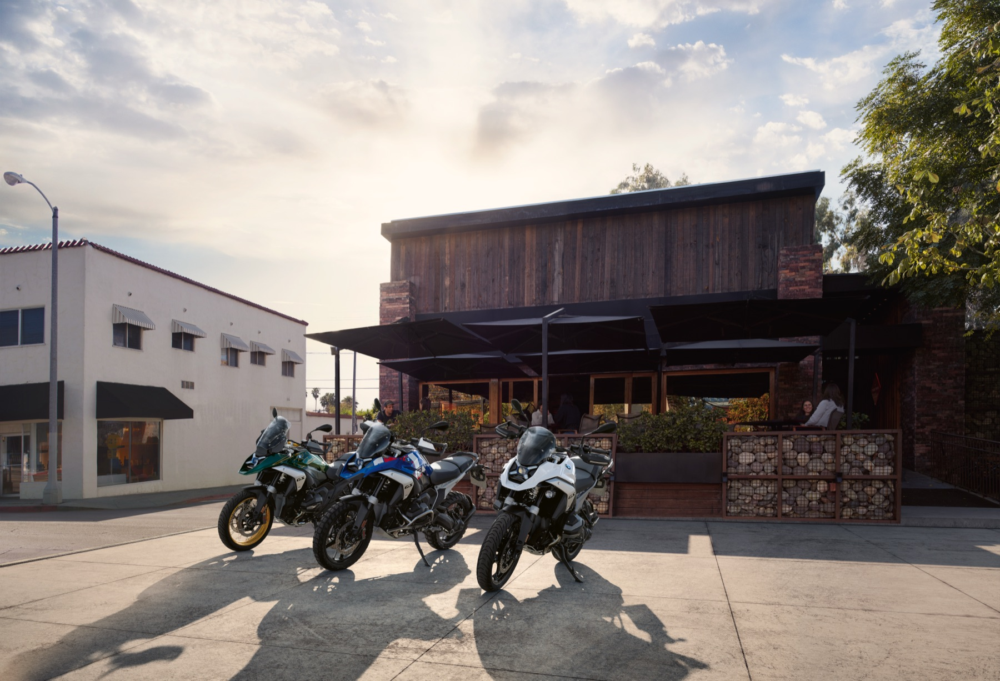

Highlights
Engine
1,300 cc two-cylinder boxer with air/liquid cooling and BMW ShiftCam valve timing.
Performance
107 kW (145 hp) at 7,750 rpm, 149 Nm at 6,500 rpm, top speed over 200 km/h.
Adventure Chassis
19" front / 17" rear cast wheels, EVO Telelever + EVO Paralever, and 190/200 mm suspension travel.
Official Photo Gallery



Technical Specifications
Data source: BMW Motorrad official R 1300 GS technical data. Model-year naming can vary by market; this reflects the latest officially published platform specs.
Powertrain
- Engine type
- Air/liquid-cooled 2-cylinder 4-stroke boxer
- Displacement
- 1,300 cc
- Bore × stroke
- 106.5 × 73 mm
- Compression
- 13.3 : 1
- Max output
- 107 kW (145 hp) @ 7,750 rpm
- Max torque
- 149 Nm @ 6,500 rpm
- Top speed
- > 200 km/h
Transmission
- Clutch
- Wet clutch, anti-hopping, hydraulically actuated
- Gearbox
- Constant-mesh 6-speed
- Final drive
- Shaft drive
Chassis
- Front suspension
- EVO Telelever, 190 mm travel
- Rear suspension
- EVO Paralever, 200 mm travel
- Wheelbase
- 1,518 mm
- Steering head angle
- 63.8°
- Trail
- 112 mm
- Front brake
- Dual 310 mm discs, 4-piston radial calipers
- Rear brake
- 285 mm disc, 2-piston floating caliper
Dimensions & Fuel
- Seat height
- 850 / 870 mm
- Fuel tank capacity
- 19.0 L
- Unladen weight (DIN)
- 237 kg
- Permitted total weight
- 465 kg
- Front tire
- 120/70 ZR 19
- Rear tire
- 170/60 ZR 17
- Fuel consumption (WMTC)
- 4.8 L/100 km
- CO₂ emissions (WMTC)
- 110 g/km